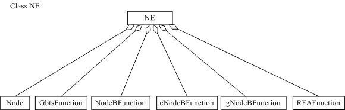

This section describes the functions and concepts of NEs.
It also illustrates managed object models (MOMs) and describes the
corresponding managed objects (MOs).
Functions and Concepts
NE is a root object
in a base station MOM and an entrance to system management functions.
NE objects aggregate management functions for RAT-specific resources
with management functions for common resources. Based on an NE, these
management functions are implemented as a whole.
Managed Object Model
Figure 1 shows MOs related the top level of the base station MOM.
Figure 1 NE MOM

The MOs in the NE MOM are described as follows:
- NE defines a root node
of base station management.
- Node defines a root
node of management functions for common resources.
- GBTSFunction defines a root node of management functions for GSM-specific resources.
- NodeBFunction defines a root node of management functions for UMTS-specific resources.
- eNodeBFunction defines a root node of management functions for LTE-specific resources.
- gNodeBFunction defines a root node of management functions for 5G-specific resources.
- RFAFunction defines
a root node of management functions for RFA-specific resources.
Copyright © Huawei Technologies Co., Ltd.